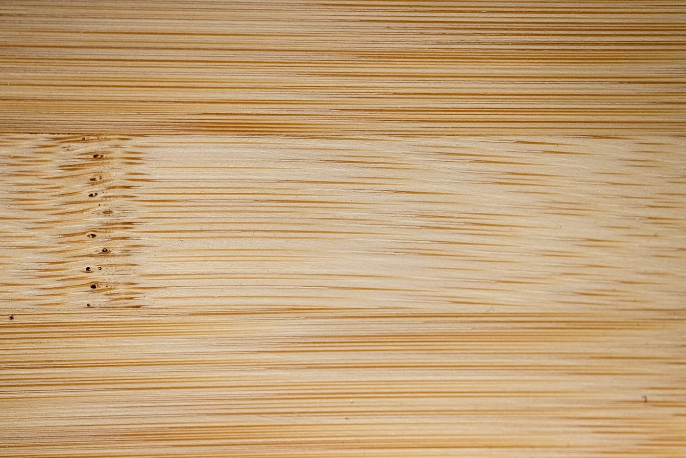
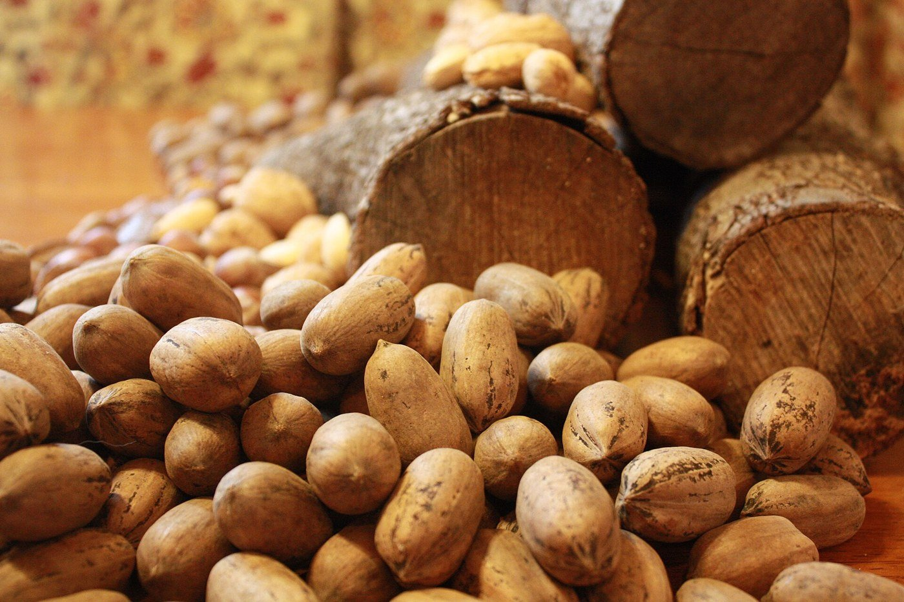

店のこと
木のテーブルと、あたたかい食卓
お店について、確認できたことだけを置いています。
確認できたこと
お店の特徴
- 料理もスイーツも、小麦粉・バター・牛乳などの厳選した材料で手作りしている(紹介ページの記載)
- 手ごねのハンバーグの下に、ホワイトソースのグラタンとミートソースのスパゲッティが隠れた一品がある(同上)
- 西鉄久留米駅から徒歩2分(同上)
- 店名「nonno」はイタリア語で祖父の意味(辞書の語義)
| 屋号 | ノンノカッフェ(nonno caffè) |
|---|---|
| 業種 | カフェ |
| 所在地 | 〒830-0032 福岡県久留米市東町340-2 |
| SNS | Instagram @nonno_caffe_ |

店名から連想した制作側のイメージ
祖父の家の台所を思わせる、素朴なあたたかさ
「ノンノ(祖父)」という店名から、制作側は「家族に作る食事のような、手間をかけた素朴な味」を連想しました。これは店名から連想した制作側のイメージで、お店の由来や理念として確認できたものではありません。お店のお話を伺ったうえで、本当の言葉に差し替えます。


写真はフリー素材のイメージです。お店の写真・提供している商品を示すものではありません。
準備中
お店の歴史・店主の想い
お店の歴史や店主さまの想いは、確認できていないため載せていません。ご提供いただいた内容をこの場所に掲載します。

写真はフリー素材のイメージです。お店の写真・提供している商品を示すものではありません。